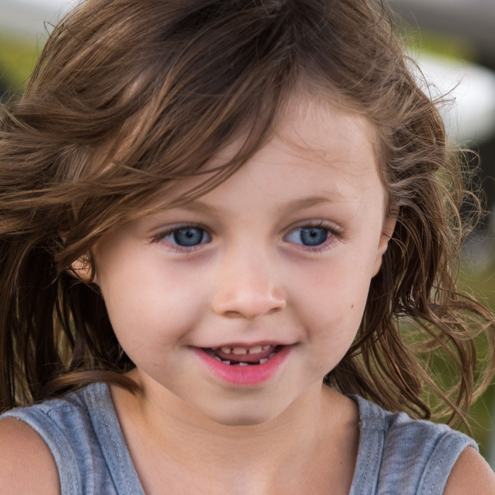
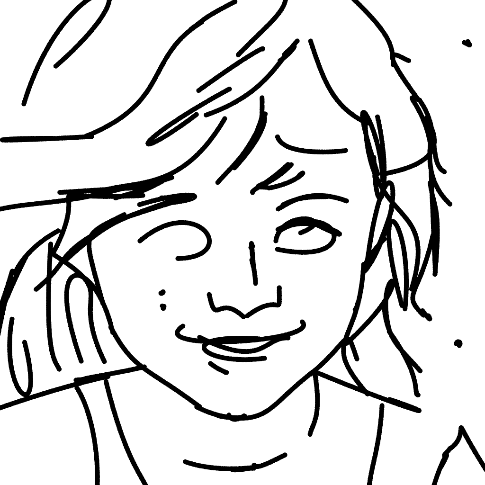
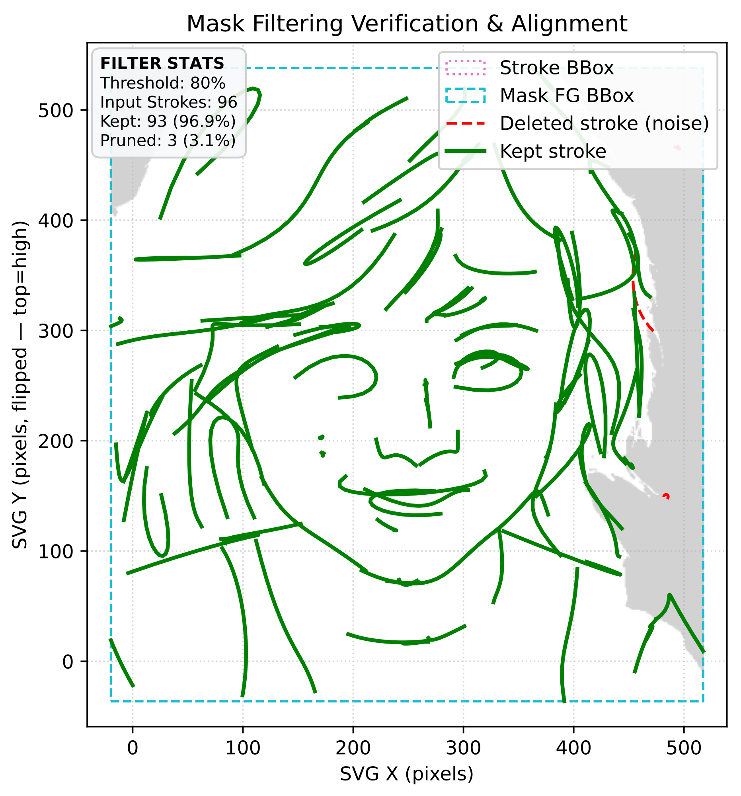
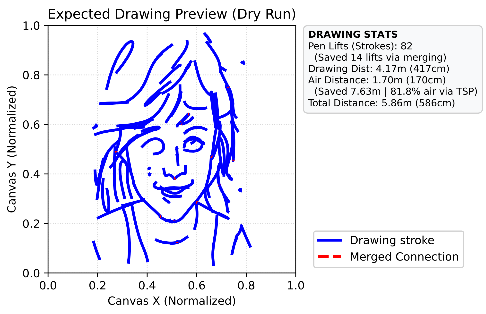

⚡ Child History Log ⚡
"Neither of my parents showed up to my actual birth..."
"Neither of my parents showed up to my actual birth..."

MISSING: web_app.jpg


svg_drawing.py).




MISSING: robot_action.jpg

MISSING: work_process.jpg (e.g. broken mount, hole in wall)